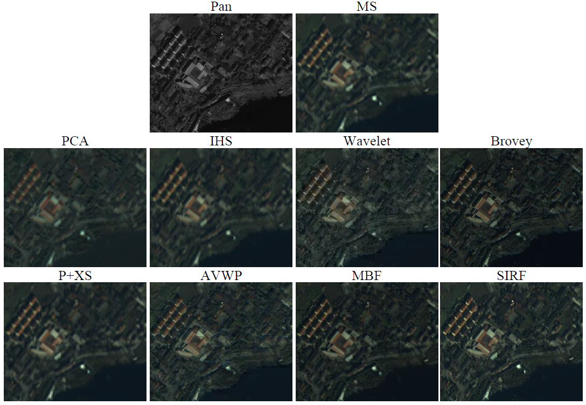

SIRF
Chen Chen, Yeqing Li, Wei Liu, and Junzhou Huang
Simultaneous Image Registration and Fusion in A Unified Framework. [MATLAB code]
Abstract
In this paper, we propose a novel method for image fusion with a high-resolution panchromatic image and a low-resolution multispectral image at the same geographical location. The fusion is formulated as a convex optimization problem which minimizes a linear combination of a least-squares fitting term and a dynamic gradient sparsity regularizer. The former is to preserve accurate spectral information of the multispectral image, while the latter is to keep sharp edges of the high-resolution panchromatic image. We further propose to simultaneously register the two images during the fusing process, which is naturally achieved by virtue of the dynamic gradient sparsity property. An efficient algorithm is then devised to solve the optimization problem, accomplishing a linear computational complexity in the size of the output image in each iteration. We compare our method against seven state-of-the-art image fusion methods on multispectral image datasets from four satellites. Extensive experimental results demonstrate that the proposed method substantially outperforms the others in terms of both spatial and spectral qualities. We also show that our method can provide high-quality products from coarsely registered real-world datasets.
Simultaneous Image Registration and Fusion
Our method can achieve simultaneous image registration and fusion with one energy function, which avoids the results to be sub-optimal. It is stable and robust, even when there exist pre-registration errors. These are the fusion results on a portion of the IKONOS China-Sichuan 58208 0000000.20001108 dataset:

Reference:
[1] Chen Chen, Yeqing Li, Junzhou Huang and Wei Liu, "Image Fusion with Local Spectral Consistency and Dynamic Gradient Sparsity", IEEE Conference on Computer Vision and Pattern Recognition (CVPR), 2014.
[2] Chen Chen, Yeqing Li, Wei Liu and Junzhou Huang, "SIRF: Simultaneous Satellite Image Registration and Fusion in a Unified Framework", IEEE Transactions on Image Processing (TIP), Volume:24, Issue: 11, pp. 4213 - 4224, 2015.